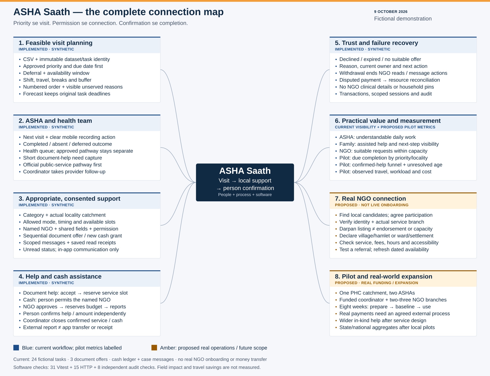

Current workflow uses fictional tasks, offers, budgets and cash reports. Case messages and read receipts are saved. Amber branches describe proposed work; pilot metrics remain proposed. No real partners, money transfers or measured field-impact percentages are claimed.